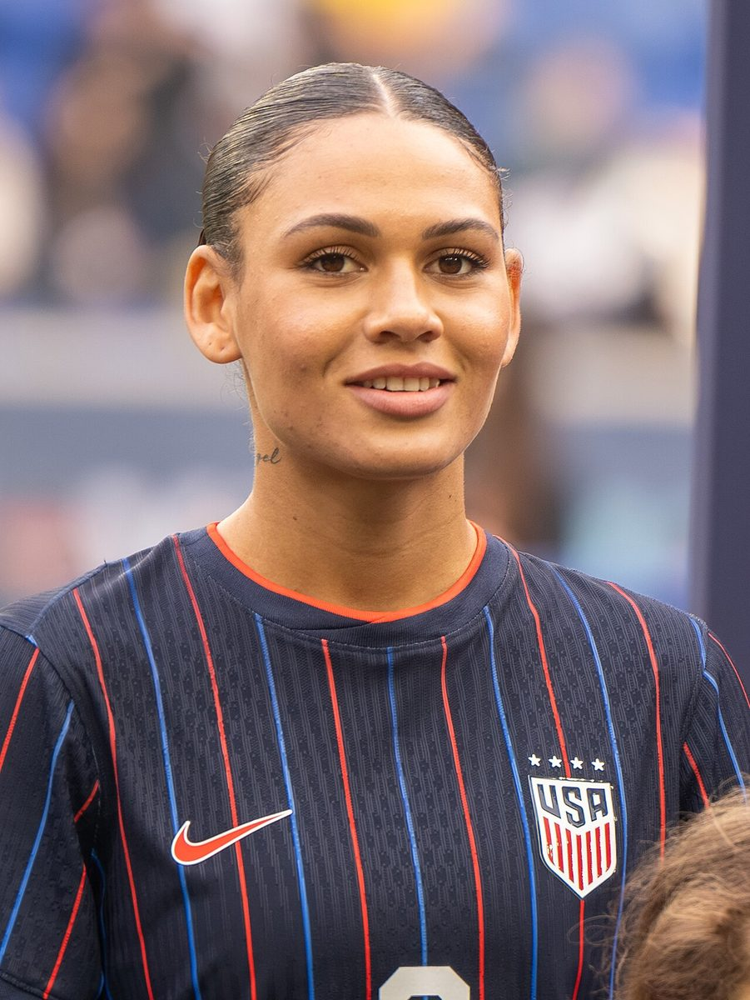

海耶斯公布美国女足23人大名单，全力出击世界杯预选赛
11月27日若能在八强战中击败萨尔瓦多，美国队将直接锁定2027年巴西女足世界杯入场券。

美国女足主教练埃玛·海耶斯（Emma Hayes）周三正式公布了出征即将打响的中北美及加勒比女足锦标赛的23人大名单。只要在11月27日的四分之一决赛中战胜萨尔瓦多，球队就将提前锁定2027年巴西国际足联女足世界杯的参赛资格。
本届赛事是该地区通往2027年世界杯和2028年洛杉矶奥运会的最关键预选赛。四支闯入半决赛的球队将直接拿到进军巴西的门票，而在八强战中折戟的队伍则将参加复活赛，争夺两个参加明年2月在摩洛哥举行的大洲际附加赛席位。由于美国队凭借东道主身份已提前直通2028年奥运会，因此全队此番的战略重心完全压在首场淘汰赛上。
奥运冠军班底坐镇，防线核心抱憾缺席

海耶斯此次征召了8名夺得巴黎奥运会金牌的功勋成员，锋线上依旧由特里妮蒂·罗德曼、马洛里·斯旺森和索菲娅·威尔逊组成的三叉戟领衔。中场方面，萨姆·科菲此前因伤错过了上一期国家队集训，如今伤愈回归。不过，主力中卫内奥米·吉尔马因仍处于反复肌肉拉伤的康复期，未能入选本次名单。
门将位置上，西雅图统治的克劳迪娅·迪基、犹他皇家的曼迪·麦格林以及曼联的法隆·塔利斯-乔伊斯将竞争主力首发。在功勋门将阿莉莎·内赫尔退役后，一号门将的竞争依旧处于开放状态。
0出场新星肖尔斯入选，阵容架构日趋成熟
这份名单清晰地勾勒出海耶斯历经两年阵容轮换后所敲定的核心框架。接手帅印以来，海耶斯累计考察了多达61名球员，并让33人完成了国家队首秀。本次入选阵容的平均年龄为26.1岁，全队仅有中场老将林赛·希普斯与罗丝·拉韦尔年龄达到或超过30岁。

效力于天使城队的后卫伊芙琳·肖尔斯（Evelyn Shores）首次入选成年国家队，她也成为继2022年的泰勒·弗林特（Taylor Flint）之后，美国女足历史上第二位在毫无国家队成年队出场记录的情况下直接入选世界杯预选赛大名单的球员。除她之外，全队仅有三名非门将球员的国家队出场数不足12次：犹他皇家后卫凯特·德尔法瓦（Kate Del Fava，1次）、圣地亚哥波浪后卫肯尼迪·韦斯利（Kennedy Wesley，9次），以及上周末刚刚在NWSL季后赛中直接任意球破门堪萨斯城潮流中场克鲁瓦·贝休恩（Croix Bethune，7次）。
在中北美及加勒比女足锦标赛过往的11届赛事中，美国女足共斩获9次冠军。面对接下来的萨尔瓦多，历史上从未缺席过任何一届女足世界杯的美国队势必全力以赴。